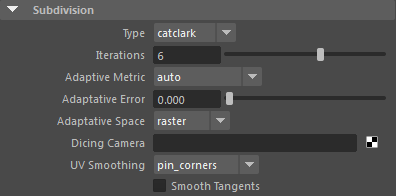
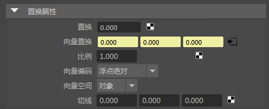
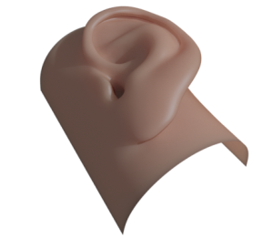

向量置换
| 延伸阅读 |
| 有关完整的着色器文档，请参见《Arnold 用户手册》中的置换。 |
使用向量贴图置换海浪
注意：
要下载对应的 Maya 场景文件和耳朵向量置换贴图，请单击此处。
重要信息：
在 Maya (2017) 中使用颜色管理时，应将向量置换贴图设置为“未经处理”(RAW)。
工作流
- 首先，您必须将细分“类型”(Type)设置为“Catclark”，并增加细分的“迭代次数”(Iterations)。从低值开始，然后逐步增加该数量，直到实现优质的置换效果。对基础网格进行细分是必不可少的。否则，当使用低多边形基础网格时，会出现分面和法线不匹配的问题。

含 6 次 subdivision_iterations 的 Catclark 细分
- 在本例中，我们已从 Mudbox 中导出了一个预设向量贴图，并使用 Arnold 渲染了它。为了保持最佳的向量置换效果，我们将它导出为 32 位 EXR 图像。
- 该向量贴图必须连接到“置换”(Displacement)节点的“向量置换”(Vector Displacement)。请务必连接整个属性，而不是按组件连接。

向量置换贴图连接到 Maya 置换节点的“向量置换”(Vector Displacement)属性（“向量空间”(Vector Space)设置为“切线”(Tangent)）
向量置换
用于连接向量置换贴图的输入属性。
向量编码(Vector Encoding)
“浮点绝对值”(Floating Point Absolute)（对于浮点贴图）或“带符号编码”(Signed Encoding)（通常是 8 位贴图，其 RGB 重映射到 (-1..1) 范围）。
向量空间(Vector Space)
可以为“世界”(World)、“对象”(Object)、“切线”(Tangent)。这是应用向量的坐标空间。默认值为“切线”(Tangent)。如果为默认值，则可通过以下三种方法定义切线：
- 创建 UV 空间，以便着色器能够使用 U 导数作为切线方向
- 手动指定“切线”(Tangent)向量（例如，为平面栅格指定 1,0,0）或通过纹理对其进行映射。如果“切线”(Tangent)向量不为空 (0,0,0)，则使用此选项。
- 让 Arnold 以最佳方式推测切线。如果未创建 UV 空间且“切线”(Tangent)为空，则着色器默认为此选项。
切线(Tangent)
用于连接基于切线的向量置换贴图的输入属性。
- 该图像在切线空间中进行计算，这非常适用于变形几何体（请参见下图）。MtoA 支持 Maya 置换着色器中的所有向量空间（_“对象”(Object)、“世界”(World)和“切线”(Tangent)_）。

设置为指定给变形几何体的切线空间的向量置换贴图。